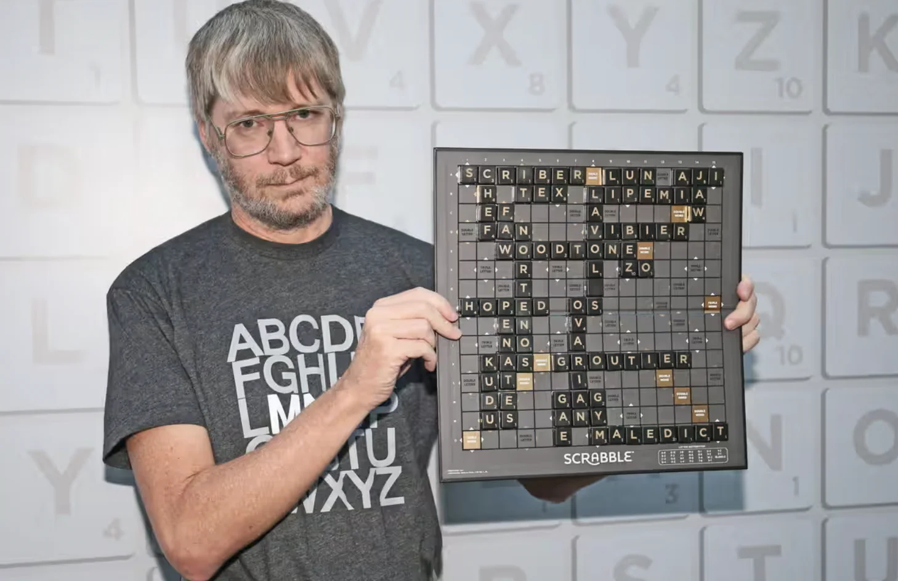

Hoe een taalmodel werkt
Moet dit überhaupt een taalmodel zijn?
Om 13:30 heb je
Klaar om te starten?
slides, uitleg, forum, promptsadvanced-ai-nl-hub.vercel.app
Niet Fable of Astra!
Open je AI in je eigen map. Typ:
Loopt iets vast van vorige week? Tafel achteraan. De rest gaat door.
Wat deed je AI vorige week?
.claude/skills/opzet/SKILL.mdgit clone, git commit, git pushgh pr create: GitHub, vanuit de terminalCLAUDE.md → AGENTS.md → context.md, bij elke start ingeladenVerborgen mappen zien
Een map met een punt ervoor is verborgen: .claude/
Terminal:
ls -aTerminal:
dir -ForceOpen en lees
CLAUDE.mdin je eigen map
AGENTS.mdtwee mappen hoger
.claude/skills/opzet/SKILL.mdhet recept van vorige week
.claude/skills/week/SKILL.mdhet recept dat je net draaide

Wanneer werd AI uitgevonden?
1956
1950: Turing bedenkt zijn test.
1956: het vak krijgt zijn naam.
2022: ChatGPT.
ChatGPT is het kleinste bolletje.
AI
Kan het leren?
Ja · Nee · Hangt ervan af
Ja en nee
Getraind, dan bevroren.
Het leert niet uit jouw gesprekken. Wat het weet, zat erin op de dag dat de training stopte.
Kan het onthouden?
Ja · Nee · Hangt ervan af
Alleen wat je het voorlegt
Geheugen is een bestand dat ingeladen wordt.
Jij maakte er vorige week een: context.md. Daarom kende je AI je naam.
Kan het alles weten?
Ja · Nee · Hangt ervan af
Ja en nee
Veel kennis, met gaten en een einddatum.
Nieuwere modellen zeggen vaker "ik weet het niet". Niet altijd.
Kan het tellen?
Ja · Nee · Hangt ervan af
Steeds beter
Redeneermodellen tellen goed.
Voor echte berekeningen: laat het code draaien. Dan rekent de computer, niet het taalmodel.
Kan het denken?
Ja · Nee · Hangt ervan af
Een beetje
Het redeneert beter dan vroeger.
Het zet stappen na elkaar en controleert zichzelf. Zonder bewustzijn.
Kan het schrijven?
Ja · Nee · Hangt ervan af
Ja
Zijn sterkste punt.
Mails, samenvattingen, teksten in elke stijl. Lees altijd na: vlot geschreven is niet hetzelfde als juist.
Kan het vertalen?
Ja · Nee · Hangt ervan af
Ja, heel goed
Beter dan elke vertaaltool van vroeger.
Het vertaalt betekenis, niet woord per woord. Vaktaal en namen: nakijken.
Kan het beslissen?
Ja · Nee · Hangt ervan af
Het kan kiezen
Jij blijft verantwoordelijk.
Het kiest vlot een label, een antwoord, een optie. Of die keuze klopt, weet je pas als je test. Daarom test je je Build.
Wat gaat erin? Wat komt eruit?
Taal in, taal uit. Lezen, schrijven, samenvatten, tekst sorteren.
Cijfers van vroeger in, een voorspelling uit.
Een foto of video in, een herkenning uit.
Een vaste regel volstaat. Een formule, een filter, een herinnering.
Taalmodel
Taal in, taal uit. Wat een mens zou moeten lezen.
Klassieke ML
Cijfers van vroeger in, een voorspelling uit.
Beeldherkenning
Een foto of video in, een herkenning uit.
Geen AI
Een vaste regel volstaat.
Vier vragen, in deze volgorde.
Het onderwerp beslist niet. De stap wel.
Nieuws over een bedrijf lezen: goed of slecht voor het aandeel?
Nieuws over een bedrijf lezen: goed of slecht voor het aandeel?
Taalmodel
Tekst lezen en beoordelen: taal in, "goed" of "slecht" uit.
De koers van een aandeel morgen voorspellen uit de koersen van vijf jaar
De koers van een aandeel morgen voorspellen uit de koersen van vijf jaar
Klassieke ML
Cijfers van vroeger in, een getal uit. Geen taal nodig.
Een schoolmail lezen en de deadline eruit halen
Een schoolmail lezen en de deadline eruit halen
Taalmodel
Vrije tekst in, een datum uit. Elke mail schrijft het anders.
Drie dagen voor die deadline een herinnering sturen
Drie dagen voor die deadline een herinnering sturen
Geen AI
Een datumregel. Je agenda doet dit al.
Een bedrijfswebsite lezen: goede klant voor een houthandel?
Een bedrijfswebsite lezen: goede klant voor een houthandel?
Taalmodel
Tekst lezen en beoordelen tegen jouw criteria.
Voorspellen hoeveel hout de houthandel volgende maand verkoopt
Voorspellen hoeveel hout de houthandel volgende maand verkoopt
Klassieke ML
Een voorspelling uit verkoopcijfers van vroeger.
Een motoronderdeel herkennen op een gsm-foto
Een motoronderdeel herkennen op een gsm-foto
Beeldherkenning
Beeld in, herkenning uit.
Een factuur doorsturen als het onderwerp "factuur" bevat
Een factuur doorsturen als het onderwerp "factuur" bevat
Geen AI
Een woordfilter. Elk mailprogramma kan dit.

Wanneer betrapte jij je AI op iets verzinnen?
Het regent …
Gent ligt aan de …
De Chiro van Bastiaan werd opgericht in …

Een taalmodel zwijgt nooit.
Het kiest altijd een volgend woord. Veel tekst erachter: meestal juist. Weinig tekst: een gok. Even zeker.
Nigel Richards won het WK Scrabble in het Frans.
Hij spreekt geen Frans.
Hij leerde welke letters samen een geldig woord maken. Niet wat ze betekenen. Een goed beeld van hoe een taalmodel werkt.

Laten we het proberen.
Getraind om te gokken. Nu beloond om te stoppen.
Bron: OpenAI, "Why language models hallucinate", 2025. Korte feitenvragen (SimpleQA).
Een mailsorteerder.
Plak een schoolmail erin. Hij kiest precies één label.
Geen vijfde optie.
Doen of lezen?
Een formaat zonder uitweg.
Jullie twijfelden. De tool niet. Hij mocht niet.
Geef je tool een uitweg: onzeker
Twee keer. Even zeker als bij de makkelijke mails.
Pauze
Terug om 12:10.
Wat zou jij bouwen?
Kies wat je bouwt.
Claude
Codex
Om 12:10 ligt je taak vast. Geen taak? Neem het voorbeeld in cursus/data/starterset/.
Toon je taak.
De zaal checkt: kunnen twee mensen los van elkaar beslissen of het antwoord juist is?
10 op 10. Goed nieuws?
Werkt alles meteen? Dan is je testset te makkelijk.
Uit de Build-brief.
Bouw. Dan meet je.
Je model ziet alleen wat jij het geeft.
Volgende week: kiezen wat erin hoort, en bewijzen dat het beter werkt.
Tegen dinsdag 6 oktober, 23:59
Klaar? Neem de brainstorm mee: regel onderaan de README.